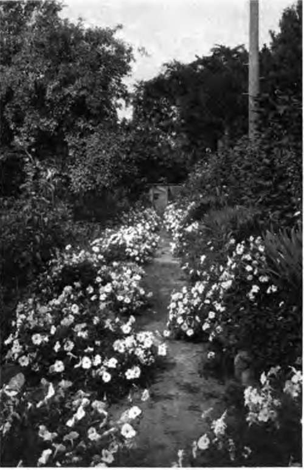

Chapter XII. The Best Uses Of Annuals
Description
This section is from the book "Flower Gardening", by H. S. Adams. Also available from Amazon: Flower gardening.
Chapter XII. The Best Uses Of Annuals
Best of all the uses of annuals is the most natural one—the employment of them to fill any spaces that hardy plants leave in the garden. Then, if the planting be naturalistic, the flower colony looks as though it had sprung up spontaneously.
No one can be said really to know annuals who' has not seen them in such plantings. Barring a! few of the very stiff ones, they take on a grace and beauty—a final touch of both—that is lacking in the formality of set designs. It is the difference between the irregularity of a dazzling patch of corn poppies in an English field and a circle, square or triangle of the same flowers cut out of a patch and removed where there is no more of the kind.
Annuals thus employed are invaluable to the hardy garden and borders. Even in the best regulated families, hardy plants cannot always be made to cover every inch o f the ground unless they have evergreen foliage—then there may be perishing just the same. Spring bulbs die down after blooming, the early lilies soon turn brown—as do bleeding heart, oriental poppies and some other perennials. Not a year but there are bare spots that nature will strive to fill with weeds rather than have them bare. Here annuals are welcomed.
But it would be doing annuals scant justice to leave them to hazards of this sort. Paradoxical though it sounds, it is an unideal hardy garden that does not provide in the layout for one or more colonies of annuals. Without them there is, somehow, a sense of incompleteness.
The greater the departure from the conventional the more objection there is to using double flowers. The objection is highly elastic; nine times out of ten it need not bar the showy double forms of the China aster, clarkia, zinnia, stock, poppy and African marigold. The chances are, however, that where thought is given to the matter the peculiar advantages of single forms for drifts and other naturalistic plantings will be apparent; single China asters and poppies look natural, double ones do not.
Besides those mentioned, some of the best annuals for unconventional massing are larkspur, Arc-Sotis grandis, godetia, lupine, Drummond's phlox, schizanthus, candytuft, leptosyne, nigella, cornflower, eschscholtzia, cosmos, petunia, nemophila, Sap on aria vaccaria, phacelia, scabiosa, chrysanthemum, spreading lobelia (L. speciosa), nemesia, Gyphsophila elegans, nicotiana, viscaria, Brachy* come iberidtfolia, portulaca, coreopsis, alonsoa, Dimorphotheca aurantiaca, leptosiphon, petunia, sweet sultan and Lav at era rosea and several others.
Where there is a choice of color, as in the case of the larkspur and phlox, make it the general rule to plant only one tone in a colony. If the latter is very large and two colors are desired, mass each; but divide the space unequally between them and make the line of division very irregular.
One of the saddest mistakes made with annuals is to plant them in mixtures. Some flowers, poppies, for instance, never shock you grievously when all colors are thrown together; but zinnias, China asters and Drummund's phlox, among others, do with a vengeance. While between these extremes are instances where a mixture may be suffered, no annual can be seen in perfection unless the varieties of the species are segregated. Treated this way some of the shades of the zinnia and China aster that seem unbearable when in close contact with others take on genuine beauty. The sweet sultan, scabiosa, portulaca, nemesia, petunia and Drummond's phlox likewise show a vast improvement when the colors are separated.
Beware of "art" and strange shades, unless the scheme is one that needs just such tones; they are beautiful when rightly applied, but not easy to apply. The large mauve blossoms of Martynia elegans are difficult picture material; so are the gold-veined blossoms of salpiglossis. And there are certain shades of scabiosa and sweet sultan that it were better to discard than to use without proper thought.
"Best of all the uses of annuals is the most natural one—the employment of them to fill any spaces that hardy plants leave in the garden".
Before deciding on annuals for temporary colonies in the hardy garden and borders, get a comprehensive idea of the height and spread of the plant; frequently a seed catalogue will give the one in print and the other in picture. Thus cosmos is very tall and therefore, for the background, save when used near a border edge to break a vista, though its height may be reduced by the somewhat reprehensible practice of pinning down the plant and letting the side shoots grow perpendicularly. Low annuals, like Brachycome iberu difolia and godetia, are for the immediate foreground or very open spaces between perennials that are farther to the rear.
In the placing of annuals among perennials a point always to be considered is the freedom with which they self-sow and thus become a nuisance unless watched very closely. The cornflower, larkspur, coreopsis and Silene armeria are as much of a pest as weeds if left entirely to their own way of thinking what their share in the population of the garden ought to be. These should have the blossoms, as they fade, snipped off with scissors —not a burdensome task if the planting is not an uncommonly large one and the work is done daily.
Where the planting of a hardy garden or border is delayed to afford time for accumulating a stock of perennials in the home nursery, annuals may serve two excellent purposes at once. Get the ground in readiness for its eventual use and then devote it to annuals entirely for one, two or three years—as circumstances necessitate, or warrant Whether the hardy scheme be formal or informal, a vast amount of experience in the effect of massing blossoms and foliage, the combination of colors and the meaning of skylines and vistas is to be had in this way.
Continue to:
- prev: The Special Value Of Perennials. Part 3
- Table of Contents
- next: The Best Uses Of Annuals. Continued